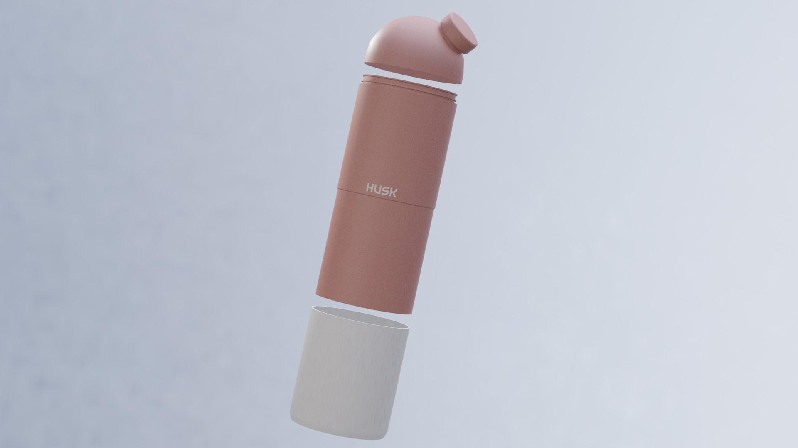
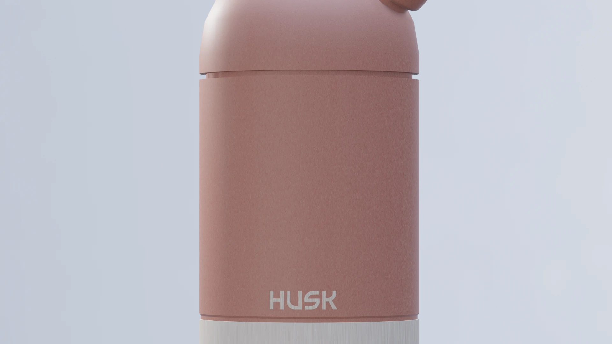
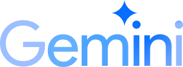

HUSK
STORY OF THIS PROJECT

Sebuah tugas kuliah terkadang bisa menjadi pemantik bagi lahirnya sebuah inovasi yang berdampak besar bagi lingkungan. Ketika mata kuliah Workshop UI/UX di semester empat memberikan tantangan untuk merancang sebuah konsep visual botol minum lengkap dengan bentuk produk dan desain labelnya, sebuah ide revolusioner tentang tumbler eco-friendly mulai mewujud. Dari sanalah lahir Husk, sebuah nama yang terinspirasi dari sekam atau kulit luar biji-bijian. Materialnya membawa misi mulia: memanfaatkan jerami padi yang biasanya dibakar dan mencemari udara, untuk dilahirkan kembali menjadi wadah estetis yang menjaga hidrasi manusia. Seluruh proses visualisasi bentuk fisik dan detail material alami ini dipahat secara presisi menggunakan software Blender.

Secara filosofis, desain botol Husk mengusung konsep "Simplicity in Versatility". Konsep ini berhasil mengintegrasikan estetika minimalis dengan fungsi modular yang inovatif. Struktur tubuh botol dirancang secara cerdas menggunakan sistem detachable base, di mana bagian bawah botol dapat dilepas dan beralih fungsi menjadi gelas portabel. Sebuah solusi praktis dan efisien yang sangat ramah bagi mobilitas tinggi para mahasiswa dan pekerja muda.

Setiap sudut dari Husk diperhitungkan dengan matang demi kenyamanan pengguna. Lubang minumnya dibuat dengan sudut ergonomis 60 derajat untuk memberikan aliran air yang presisi di tengah padatnya aktivitas sehari-hari. Secara visual, botol ini menerapkan prinsip keseimbangan asimetris yang memikat. Tekstur material dari jerami padi sengaja dipertahankan untuk memberikan kesan natural dan pengalaman tactile yang unik saat disentuh, menciptakan identitas ramah lingkungan yang kuat namun tetap terlihat modern serta trendy untuk menemani aktivitas di lingkungan kantor maupun kampus.
Husk bukan lagi sekadar pemenuhan nilai tugas akhir, melainkan sebuah manifestasi bagaimana desain modern dan kepedulian lingkungan dapat melebur menjadi satu produk yang fungsional.
TOOLS USED FOR THIS PROJECT

Google GeminiMari kita bangun sesuatu yang luar biasa bersama
Terbuka untuk kesempatan magang, project freelance atau kolaborasi riset.